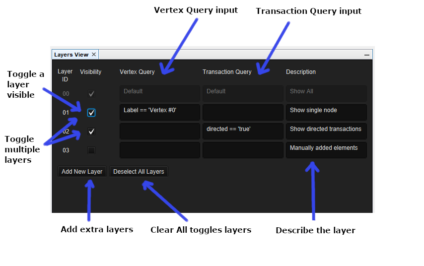
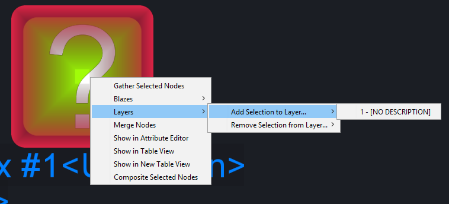

The Layers View holds a collection of Layers. Each Layer can represent a static set of elements, or a dynamically calculated set of elements which match a query criteria.
The following image shows the basic components of the Layers View
There are two main ways to create and use Layers: Through the Layers View Window, and through the use of shortcut keys.
To create a Layer with a shortcut key, hold Control-Alt + L. To Toggle a Layer with a shortcut key, Control-Alt + the corresponding number from 1-9. The shortcut key Control-Alt + D can also be used to deselect any active layers as per the image above. The maximum amount of layers is 64.
To add an element to a layer, you may either use the right click context menu to add/remove it from the specified layer.
There are 2 main layer types within the Layers View. The differentiating factor of the two being the way elements are chosen to be displayed.
The Manual Layer is a layer which only contains elements added via right click context menu on an element.
The Query Layer is a layer which shows only the elements represented by the query in either fields Vertex or Transaction. The query layer is designed to act dynamically. Therefore it will get recalculated if the value the layer is concerned about changes. For example, Layer 1 has a vertex query described as Label == 'Vertex #0'. This will show the vertex with that label. The layer is enabled. That element is shown. Choose to change Vertex #0's label to something like 'V#0', the query will note the change and recalculate for the whole graph.
When a single layer is toggled on, it will reflect on the graph. When multiple manual layers are selected, it will reflect as show
everything on layer x, as well as on layer y.
To query elements, the query must be valid. A valid query takes the form of [attributeName] [operator] [value]. As an example, the following would show elements with the Label that matches the string within the quotes. Label == 'Vertex #0'
Any attribute name can be used to query the graph. Below is a short list of commonly queried attributes.
Operators can be used to query, edit and compare values. Below is a list of currently supported query operators.
To ensure correct querying, values must be escaped via 'single' or "double" quotes.
Using the query layers enables the use of nested queries. This makes complex conditions possible. Nested queries can be achieved by simply surrounding internal queries with ( and ).
Label == 'Vertex #0<Unknown>' || Label == 'Vertex #1<Unknown>' - Shows elements that satisfy either constraint.
Label == 'Vertex #0<Unknown>' & nradius == '1.5' - shows elements that satisfy both constraints.